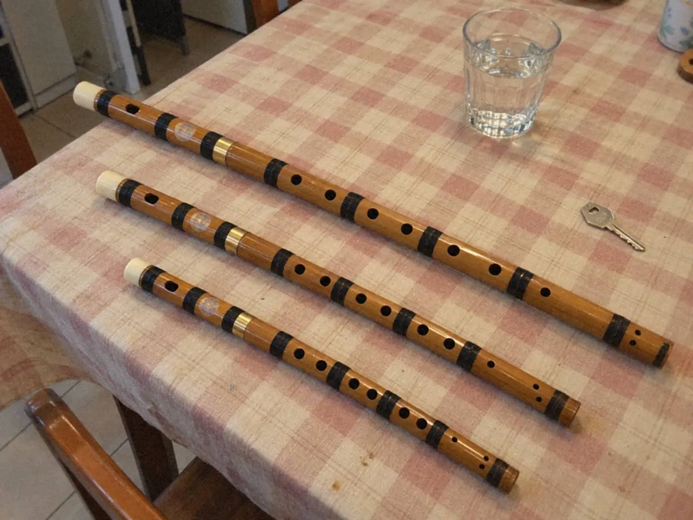

第一支笛子選哪個調，先看手。六個孔按得自然，手腕不用拉緊，那支笛才練得下去。手形過關之後，再看老師用的教材和你想吹的曲。

網上常見的推薦清單省了這一步。同一支熱門的笛，手指修長的成人拿着剛好，換成手細的學生，可能連第三孔也要伸直手指去遮。
三個調差在哪裏？
不同調的笛子，尺寸和音域都不同。調越低，管身越長，孔距也越闊；調越高，管身較短，手指不用張得那麼開。
D 調比 F、G 調長，孔距較闊，聲音較低而厚。G 調最短，孔距最窄，聲音較高較亮。F 調在兩者之間。這裏的 G 調指常見的小 G，另有更長更低的大 G，選購時要說清楚。

這只是起點。同一個調，不同製作者的孔距也會有分別，所以尺寸要在手上試，不能只看型號。
手細的話，先試哪一支？
先試孔距窄的 G 調或 F 調。手指能輕鬆遮孔，初學時才可以把注意力放回氣和聲音。
手掌較大、手指夠長，而且喜歡低一點的聲音，可以直接試 D 調。不必因為別人說 D 調「較正統」或 G 調「較易」就定下來。聲音喜好是真實的考慮，只是要排在手形之後。
已有老師或合奏，選擇就簡單
先問清楚。老師的教材、樂團或合奏用哪個調，通常就決定了第一支笛。自己買回來才發現用途不合，是最常見也最容易避免的錯。
未有老師，又未打算合奏，就按手形和喜歡的聲音揀一支，不用一次買齊幾個常見調。第一支笛的工作，是讓你舒服地把基本動作建立起來。
試笛時看甚麼？
試持和試吹分開做。
試持時逐孔輕放手指，看手腕有沒有拉緊，肩膊有沒有抬高。遮得住但手很累，也算不合適。
試吹時用同一段短句、相近的力度，逐支比較，記下哪幾個音反應容易，哪幾個不容易。初學者未必吹得穩，一支吹不響不等於那支笛不好，可請老師代為試吹。
價錢、聲音之外，也問清楚保養方法。竹笛怕乾濕急變，香港天氣下的收納可以先看竹笛與洞簫的竹材保養。
常見問題
孩子學笛子，選哪個調？
先看手指能否自然遮孔，孔距窄的笛子通常較易上手。學校樂團或老師指定了調，就跟指定的調。
第一次要買齊幾支嗎？
不用。先用一支把基本動作建立好，等教材或合奏需要另一個調時再添。
D 調是否比 G 調難學？
難易要看手形。孔距對你太闊，就會難；手夠大的話，D 調一樣可以由第一個音開始學。
想知道自己的手適合哪個調，可以帶上想吹的曲目，經笛子課程查詢。還未買笛，先讀竹笛入門：筒音、簡譜與第一個音。